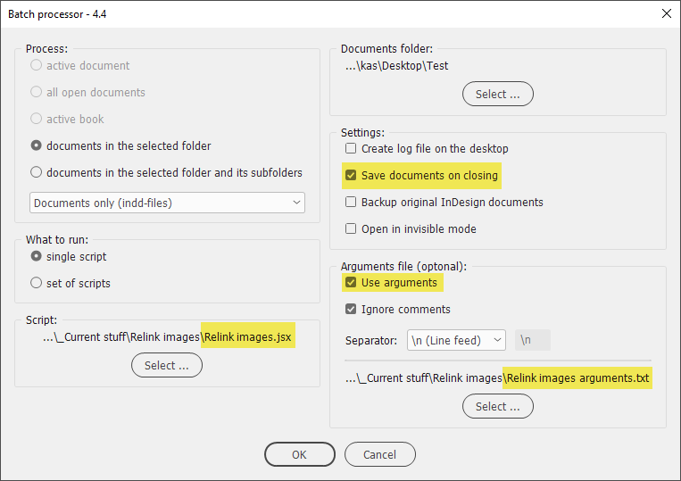
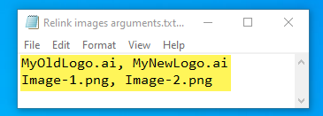
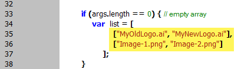
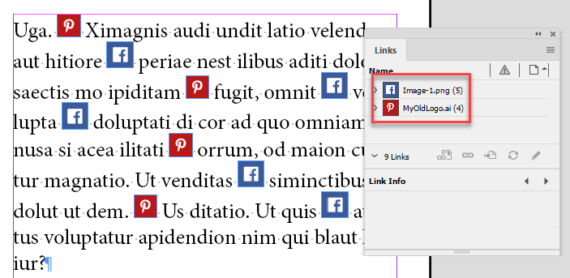
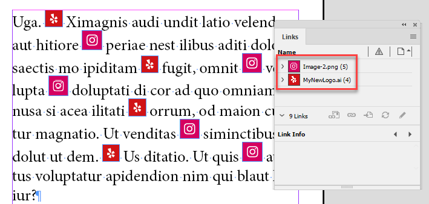
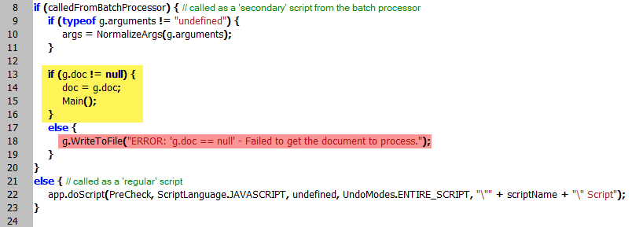
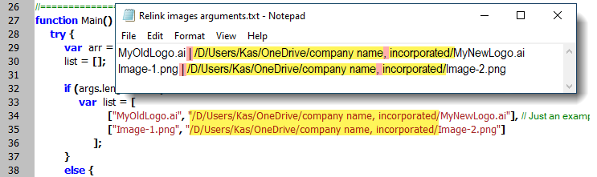

Relink images
Script for the batch processor version 4.4 or later. Alternatively, you can run it directly from InDesign as a regular script.

This script batch-relinks images according to the list defined either in the arguments file…

…or in the array defined in the script itself.

Before

After

With the all open documents option selected, make sure to use g.doc variable to send the current document from the batch processor to this script otherwise, it will not work correctly. With all other options, you can alternatively use app.activeDocument or app.documents[0].

Code explanation: if the script is called from the batch processor and the g.doc variable is sent from it, the doc variable is set to g.doc. If something goes wrong, though it’s hardly possible, an error message is written to the log: "ERROR: 'g.doc == null' - Failed to get the document to process."
If the script is run as a regular one — from the Scripts panel or ESTK — the doc variable is set to the current document.
If the arguments file isn’t provided, or the script is run directly from InDesign, the hardcoded list array is used instead. The former is a better approach since you can edit the list in the text file and don’t have to mess up with the script itself.
Click here to download the script (plus the sample arguments file), and here are the test files I used for debugging (see the screenshots above).
Relink images by path
Here is a minor variation of the script: Relink images by path. Instead of the new image’s name, you should indicate the exact path.
Note: if you are using an arguments file, use the 'pipe' character to separate elements in the array (aka columns) because file and folder names may contain commas, semicolons, etc. but not pipes. Leave the default \n (Line feed) for separating lines (aka rows). A sample arguments file is included with the script.

If you found my scripts useful and want me to develop more free scripts, consider supporting me by donating via PayPal directly to my e-mail: askoldich [at] yahoo [dot] com. (Due to PayPal’s restrictions for Ukraine, I can’t have a Donate button on my site.)
Back to the main Batch processor page